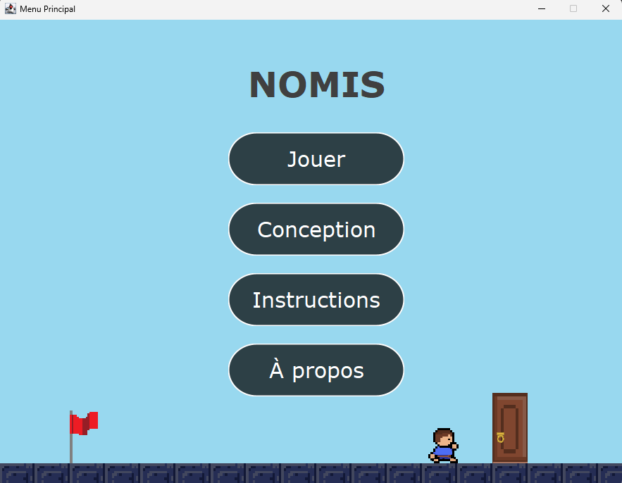
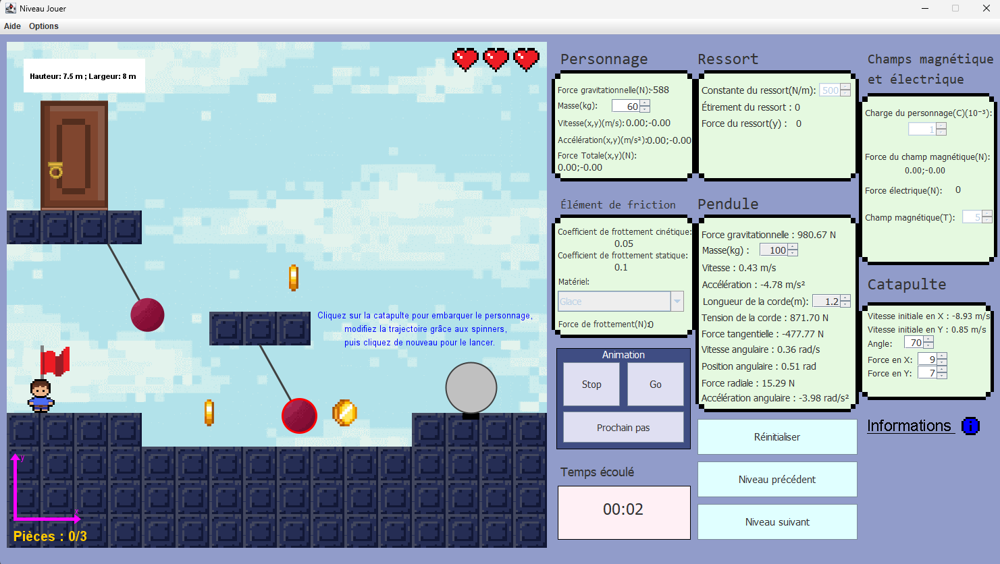
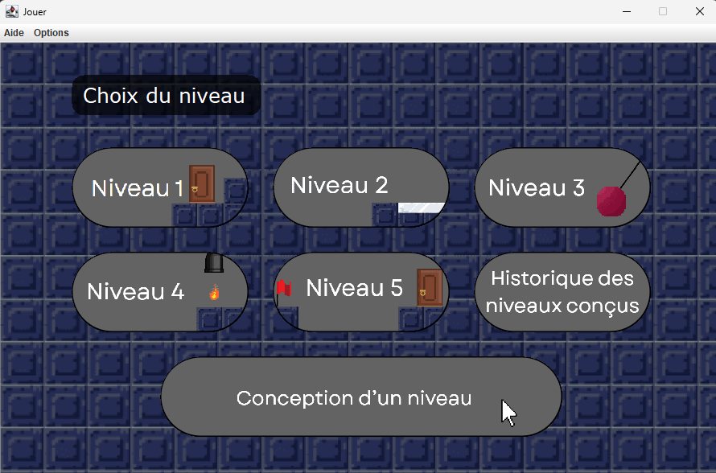
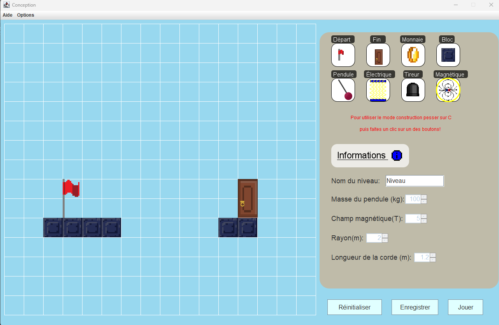

Un jeu 2D où chaque niveau est construit autour d'un phénomène physique réel. Développé en équipe de quatre sur une session, avec un éditeur qui laisse les joueurs créer leurs propres niveaux. J'y ai tenu le rôle de Scrum Master tout en codant une partie du jeu.

Pour notre dernière session au Collège de Maisonneuve, l'équipe devait concevoir une application Java réunissant les concepts du programme : physique, mathématiques et programmation orientée objet.
Le défi : modéliser des phénomènes physiques réels dans un environnement interactif et ludique, tout en gérant un projet d'équipe sur plusieurs semaines.
L'idée de départ s'inspire librement de Fireboy and Watergirl : des niveaux en 2D qui tiennent sur un seul écran. Le résultat est très différent. Il y a un seul personnage, et chaque niveau se compose d'éléments physiques qu'on peut combiner. Chaque élément s'appuie sur de vraies formules de physique.
Un même niveau peut réunir plusieurs de ces éléments à la fois.


À gauche : un niveau en cours, avec la physique calculée en temps réel et un panneau de données vivant.
À droite : la sélection des niveaux.
Au delà des niveaux fournis, le jeu intègre un éditeur : on place soi même les éléments (départ, fin, pièces, blocs, pendule, champ, tireur), on règle les paramètres physiques, puis on enregistre et on rejoue son niveau.

J'ai porté deux casquettes sur ce projet. Comme Scrum Master, je coordonnais l'équipe et veillais au bon déroulement de la méthode agile :
Côté développement, j'ai touché à beaucoup de parties du jeu :